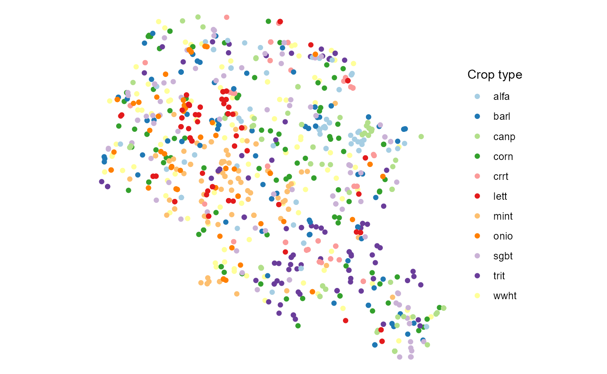

Introduction
Preparation of land use data for the SWATbuildR1 is among the most difficult tasks as it requires collection and combination of multiple GIS datasets (crop land, tile drain extent, Natural/Small Water Retention Measures (NSWRMs) installation sites, etc.). Moreover, it also requires putting a lot of efforts into cleaning topological issues from prepared layer. However, even more difficult task is to prepare land use time series data required for the preparation of management schedules necessary for SWAT+ model. This page will provide tools (or links to them) and workflow to help with this task. Particular focus is paid for preparing land use time series data (when local data are not available) from remote sensing sources required for SWATfarmR tool.
Land use layer
Merging different data sets, cleaning topological errors and
preparing the final layer directly usable in SWATbuildR is
a quite time consuming task. It can be done with the Python script we
have prepared for such task. This script with an example data is
available on zenodo
page. arcpy library is required with ArcGIS
Advanced license.
In order to run scrip following GIS datasets should be collected:
- General land cover covering all area (raster);
- Catchment boundary (polygon);
- Crop fields (polygon);
- River channels (line);
- Tile drain extent (polygon);
- Measure extent (polygon)2.
These GIS layers should be adjusted to fit structure of example data
or the script should be adjusted to fit input data structure. After
successfully running script resulting data layer should be inline with
SWATbuildR requirements (please see SWAT+ modeling
protocol sections 2.2 and 2.3). An example of data structure is
provided below.
##Loading libraries
library(svatools)
library(tidyverse)
library(sf)
##Loading data
lu_path <- system.file("extdata", "GIS/lu_layer.shp", package = "svatools")
lu <- st_read(lu_path, quiet = TRUE)
##Adding IDs to land use field data and selected required columns
lu <- mutate(lu, id = row_number()) %>%
select(id, type, drainage, measures)
##Printing structure of the data
str(lu)## Classes 'sf' and 'data.frame': 10443 obs. of 5 variables:
## $ id : int 1 2 3 4 5 6 7 8 9 10 ...
## $ type : chr "wwht" "wwht" "corn" "wwht" ...
## $ drainage: int 0 0 0 0 0 0 0 0 0 0 ...
## $ measures: chr NA NA NA NA ...
## $ geometry:sfc_POLYGON of length 10443; first list element: List of 1
## ..$ : num [1:16, 1:2] 479720 479710 479697 479698 479669 ...
## ..- attr(*, "class")= chr [1:3] "XY" "POLYGON" "sfg"
## - attr(*, "sf_column")= chr "geometry"
## - attr(*, "agr")= Factor w/ 3 levels "constant","aggregate",..: NA NA NA NA
## ..- attr(*, "names")= chr [1:4] "id" "type" "drainage" "measures"Remote sensing
SWAT+ model has important capabilities to simulate impacts of agriculture on water flows and water quality in water bodies. However, this requires information about agricultural activities in a selected area. One of the most important is crop rotation data. Yet, such information rarely is available or freely accessible. In such cases remote sensing data could be used to generate information about crops for selected time period. More information about this is provided in SWAT+ modeling protocol section 4.1.1).
Google Earth script
In the framework of the OPTAIN project deliverable 3.2 (Szabó et al. 2022), a Google Earth Engine-based script (Mészáros and Szabó 2022) was developed to predict crop types with the random forest method based on time series reflectance data of Sentinel 1A and 1B satellite radar images. Output of the script is a series of crop maps starting from the year 2015 to latest available year. Required input data:
- Catchment boundary;
- Training points;
- Parcel/field boundaries.
Input data
Training data is necessary for the classification algorithm. In case no crop types data is available LUCAS: Land Use and Coverage Area frame Survey data can be used. In our case we had local data for year 2021. This was used for the preparation of training set.
However, before generating training set for a remote sensing algorithm is good practice to examine input data. In an example below, areas for each land use/crop type were calculated and provided as a figure. As a general recommendation land use/crop types with very small areas should be eliminated from further workflow. In provided example crop types with areas occupying less than 0.1% were assigned general code “agrl”. Thus eliminated from further workflow.
##Calculating areas in ha and % for land uses/crops
lu_area <- lu["type"] %>%
mutate(area = st_area(geometry)) %>%
st_drop_geometry() %>%
group_by(type) %>%
summarise_all(sum) %>%
mutate(area = as.numeric(area/10000))
lu_area["Sum"] <- sum(lu_area$area)
lu_area["Area [%]"] <- round(100*lu_area$area/lu_area$Sum, 2)
##Printing figure
ggplot(lu_area, aes(x = reorder(type, `Area [%]`), y = `Area [%]`)) +
geom_bar(stat="identity", mapping = aes(fill = type))+
geom_text(aes(x = type, label = `Area [%]`), hjust = -0.1, size = 3)+
labs(y = "area in %", x = "crops/land use")+
ylim(0, 25) +
coord_flip()+
theme_bw()+
theme(axis.text.y = element_text(size = 8))Training data
Remote sensing script requires training points with information about year and land use/crop type. Such data can be prepared with get_lu_points function. This function requires preparation of lookup table where each land use has assigned numeric code. Moreover, some land use type as forest, water, urban land uses also will not be participating in the rotation. These should be set aside.
##Preparation of lookup table
lookup <- data.frame(lc1 = seq(1:length(unique(c(lu$type)))),
type = unique(c(lu$type)))
##Setting, which land uses will not change
lu_constant <- c("fesc", "orcd", "frst", "frse", "frsd", "urld", "urhd", "wetl", "watr", "agrl")
##Obtaining training data
pts <- get_lu_points(lu, 2021, lookup, lu_constant)
##Plotting points to be used in remote sensing algorithm training
ggplot(pts %>% left_join(lookup, by = "lc1")) +
geom_sf(mapping = aes(col = type)) +
scale_color_brewer(palette = "Paired", name = "Crop type")+
theme_void()
GIS layers have to be prepared and saved into .shp files to be transferred to the Google Earth Engine. These files can be directly used with the classification script.
##Preparing just the boundary data for fields
parcels <- lu["id"] %>%
st_transform(4326)
##Preparing basin data
output_path <- "../output/"
basin_path <- system.file("extdata", "GIS/basin.shp", package = "svatools")
catchment <- st_read(basin_path, quiet = TRUE) %>%
rename(name = basin) %>%
mutate(name = "Upper_Zglowiaczka") %>%
st_transform(4326)
##Writing all the necessary training data for remote sensing algorithm.
st_write(pts, paste0(output_path, "pts.shp"), append = F)
st_write(parcels, paste0(output_path, "lu_prcl.shp"), append = F)
st_write(catchment, paste0(output_path, "catchment.shp"), append = F)Rotation extraction
Running Google Earth Engine-based script prepared by Mészáros and Szabó (2022) generates .tif raster file with bands for each year land use/crop types (represented by numeric codes). One year example of classification results are provided below.
For this .tif file extract_rotation function can be applied to extract all crop rotation information. This information is delivered in a format directly usable by SWATfarmR input data preparation scripts, which are applied to generate SWAT+ management crop rotation schedules. In our example complex rotations for period 2015-2022 were extracted for each field from remote sensing classification results. Results were saved in a new shape file. Attribute table example is printed below.
##Loading results for accuracy
lu_rot <- extract_rotation(lu, 2015, "cropmaps2015_2022.tif", "../output/", lookup, lu_constant)
##Overwriting 2021 year classification results since actual data were available.
lu_rot <- lu_rot %>%
mutate(y_2021 = ifelse(!is.na(y_2021), type, NA)) %>%
select(-type)
##Writing results for SWATfarmR input preparation functions
st_write(lu_rot , paste0(output_path, "lu_rot.shp"), append = F)
# write.csv(lu_rot %>% st_drop_geometry(), "lu_rot.csv", row.names = F)Example of prepared attribute table is provided below. It fulfills requirements set in SWAT+ modeling protocol section 4.1.1.
lu_rot_df <- read.csv(system.file("extdata", "lu_rot.csv", package = "svatools"))
print(head(lu_rot_df, 10))## lu y_2015 y_2016 y_2017 y_2018 y_2019 y_2020 y_2021 y_2022
## 1 field_1 trit trit trit trit corn corn wwht wwht
## 2 field_2 wwht wwht wwht wwht wwht wwht wwht corn
## 3 field_3 canp canp corn alfa corn alfa corn corn
## 4 field_4 trit alfa corn corn mint trit wwht corn
## 5 field_5 alfa alfa alfa alfa mint mint wwht alfa
## 6 field_6 barl alfa corn onio barl corn corn trit
## 7 field_7 sgbt canp sgbt lett lett lett corn corn
## 8 field_8 wwht barl sgbt sgbt sgbt sgbt wwht barl
## 9 field_9 barl corn barl wwht mint mint mint mint
## 10 field_10 sgbt corn mint mint barl wwht mint mintPrepared attribute table can be looped, if longer time series of crop rotation data is needed. Following lines provides example how time series could be extended.
i=1
df <- lu_rot
##Loop to extend time series
while(i != 5){
df <- bind_cols(df, lu_rot_df[,c(2:9)])
i = i +1
}
##Write the column names and the final file
colnames(df) <- c("lu", paste0("y_", seq(1983,2022)), "geometry")
##To get 33 years exact
df <- df[-c(2:8)]
st_write(df, paste0(output_path, "lu_rot_final.shp"), append = F)